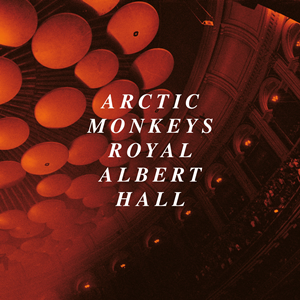

Tranquility Base Hotel & Casino
(2018)

Tranquility Base Hotel & Casino merupakan album studio keenam dari grup musik rock Inggris Arctic Monkeys. Album ini dirilis pada tanggal 11 Mei 2018 oleh perusahaan rekaman Domino. Lagu-lagu dalam album ini ditulis oleh Alex Turner pada tahun 2016 menggunakan instrumen Steinway Vertegrand di rumahnya yang berada di Los Angeles.
505
(2007)

Judul album, Favourite Worst Nightmare, berasal dari lagu "D Is for Dangerous", lagu ketiga yang ditampilkan di album. Band ini mengatakan mereka juga akan menamai album "Lesbian Wednesday", "Gordon Brown", atau "Gary Barlow" Dalam sebuah wawancara dengan NME, Nick O'Malley mengumumkan beberapa judul termasuk "D Is for Dangerous" dan "Balaclava". Trek "The Bakery" dan "Plastic Tramp".
Live at the Royal Albert Hall
(2020)
Live at the Royal Albert Hall adalah album live oleh band rock Inggris Arctic Monkeys, terdiri dari penampilan mereka pada 7 Juni 2018 di Royal Albert Hall di London. Album ini dirilis pada 4 Desember 2020 melalui Perusahaan Rekaman Domino, dengan semua pendapatan akan disumbangkan ke badan amal War Child.